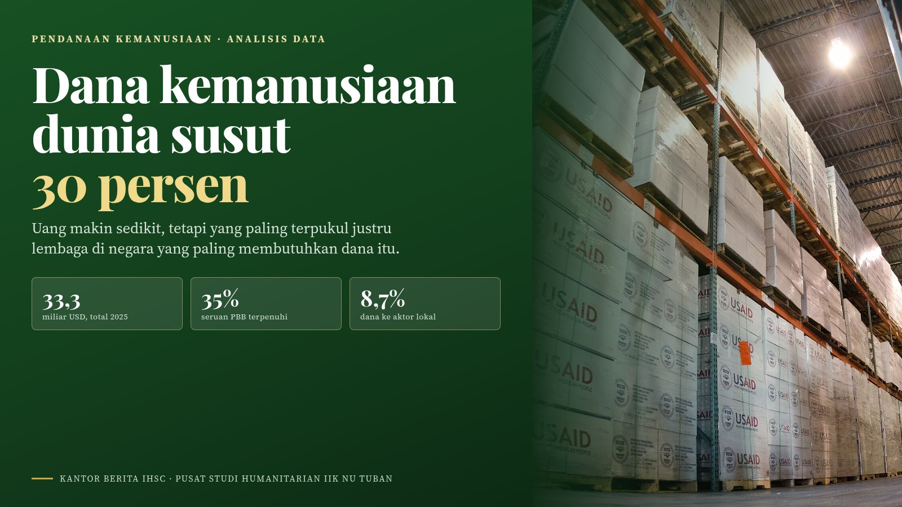

1,800 Free Humanitarian Training Titles, Open to Volunteers
1.800 Materi Pelatihan Kemanusiaan Gratis, Terbuka untuk Relawan

TUBAN, IHSC. The online training catalogue holds more than 1,800 titles: courses, videos, downloadable guides, and certification programmes. It is open at no cost to humanitarian workers, disaster volunteers, and NGO staff. It is called DisasterReady, it is run by the Cornerstone OnDemand Foundation, and its material is offered in four languages: English, French, Spanish, and Arabic.
TUBAN, IHSC. Katalog pelatihan daring berisi lebih dari 1.800 judul kursus, video, panduan unduhan, dan program sertifikasi itu terbuka gratis bagi pekerja kemanusiaan, relawan bencana, dan staf lembaga swadaya masyarakat. Namanya DisasterReady, dikelola Cornerstone OnDemand Foundation, dan materinya tersedia dalam empat bahasa: Inggris, Prancis, Spanyol, dan Arab.
The platform grew out of the late-2010 floods in Pakistan that affected 20 million people, when Save the Children needed to train thousands of aid workers before deployment. An early version was piloted in 11 countries with 20 humanitarian organisations, and the full service launched in 2013. Its site now reports more than 1,500,000 humanitarian and development professionals and organisations using it, and its mobile app allows courses to be completed without an internet connection.
Platform ini berawal dari banjir Pakistan akhir 2010 yang berdampak pada 20 juta orang, ketika Save the Children perlu melatih ribuan pekerja sebelum diterjunkan. Uji coba awal berjalan di 11 negara bersama 20 organisasi kemanusiaan, lalu diluncurkan penuh pada 2013. Situs resminya kini mencatat lebih dari 1.500.000 pekerja dan organisasi kemanusiaan memakai layanan ini, dan aplikasi ponselnya memungkinkan materi diselesaikan tanpa sambungan internet.
Eight clusters, assessment-based certification
Delapan rumpun, sertifikasi berbasis asesmen
The material is organised into eight clusters: project and programme management, safety and security, humanitarian essentials, professional development, management and leadership, food security and nutrition, staff care and safeguarding, and cash and voucher assistance. Some titles lead to certificates assessed through examination, among them Humanitarian Certification, Core Humanitarian Certification, the MEAL Certificate, Project Management Certificate, Personal Safety and Security Certificate, Procurement and Logistics Certificate, and Security Risk Management Certification.
Materinya tersusun dalam delapan rumpun: manajemen proyek dan program, keselamatan dan keamanan, dasar-dasar kemanusiaan, pengembangan profesional, manajemen dan kepemimpinan, ketahanan pangan dan gizi, perawatan staf dan perlindungan, serta bantuan tunai dan voucher. Sebagian judul berujung pada sertifikat yang dinilai lewat asesmen, antara lain Humanitarian Certification, Core Humanitarian Certification, MEAL Certificate, Project Management Certificate, Personal Safety and Security Certificate, Procurement and Logistics Certificate, dan Security Risk Management Certification.
The content uses the working vocabulary of the sector: humanitarian principles, protection of vulnerable groups, monitoring and evaluation, procurement and logistics, staff care, and personal security. For an organisation drafting an internal training curriculum, the catalogue works as a standards reference that does not have to be purchased.
Isinya memakai bahasa kerja sehari-hari di sektor ini: prinsip kemanusiaan, perlindungan kelompok rentan, pemantauan dan evaluasi, pengadaan dan logistik, perawatan staf, serta keamanan personal. Bagi organisasi yang sedang menyusun kurikulum pelatihan internal, katalog ini berfungsi sebagai rujukan standar yang tidak perlu dibeli.


Ketuk gambar untuk membuka ukuran penuh / Tap image for full size
The limits deserve the same clarity. Most titles sit at introductory level and are designed for practitioners working inside the international agency system. Certificates issued are evidence of course completion and of an internal assessment, not a professional licence and not academic credit. A single course does not replace field simulation, mentoring, and practice in a service facility.
Batasnya juga perlu disebut. Sebagian besar judul berada di tingkat pengantar dan dirancang untuk pekerja yang bergerak di dalam sistem lembaga internasional. Sertifikat yang diterbitkan adalah bukti penyelesaian pelatihan dan kelulusan asesmen internal, bukan lisensi profesi dan bukan kredit akademik. Satu judul kursus tidak menggantikan simulasi lapangan, pendampingan, dan praktik di fasilitas pelayanan.
In Indonesia, humanitarian training channels already run on their own: the national disaster agency BNPB, the SAVE Academy run by SalamAid, PMI training, and community platforms such as Bahtera Siaga. Within that landscape, an international catalogue of this kind serves as a complement and a point of comparison, not a substitute for the domestic pathway already in place.
Di Indonesia, kanal pelatihan kemanusiaan sudah berjalan sendiri: BNPB, SAVE Academy milik SalamAid, pelatihan PMI, dan platform komunitas seperti Bahtera Siaga. Dalam lanskap itu, katalog internasional semacam DisasterReady berposisi sebagai pelengkap dan pembanding standar, bukan pengganti jalur dalam negeri yang sudah terbangun.
IHSC reads the catalogue through two of its divisions: Disaster Risk and Response, and Health in Conflict and Displacement. The centre issues no international certification. Its role is to examine the content of those standards, test how they fit conditions in the field, and translate their principles into everyday working language. For IIK NU Tuban, graduates work in district hospitals and community health centres, in pesantren, in industrial zones, and on the coast. They are the ones who meet residents first, and foreign material helps only when someone prepares the linguistic bridge.
IHSC membaca katalog ini dari dua bidangnya: Risiko dan Respons Bencana, serta Kesehatan Konflik dan Pengungsi. Pusat studi ini tidak menerbitkan sertifikasi internasional. Perannya mengkaji isi standar tersebut, memeriksa kesesuaiannya dengan keadaan di lapangan, lalu menerjemahkan kaidahnya ke dalam bahasa kerja sehari-hari. Bagi IIK NU Tuban, lulusannya bekerja di RSUD dan puskesmas, di pesantren, di kawasan industri, dan di pesisir. Mereka yang berjumpa warga lebih dulu, dan materi asing hanya berguna bila ada pihak yang menyiapkan jembatan bahasanya.
In humanitarian work, shared standards prevent three things at once: assistance that piles up at a single point, beneficiary data that disappears, and volunteers who become the next casualties. The catalogue is open and free. What remains is the work of turning its principles into daily practice in the field.
Dalam kerja kemanusiaan, standar bersama mencegah tiga hal sekaligus: bantuan yang saling bertumpuk, data penerima yang hilang, dan relawan yang menjadi korban berikutnya. Katalognya sudah terbuka dan gratis. Pekerjaan yang tersisa adalah menerjemahkan kaidah di dalamnya menjadi praktik harian di lapangan.
Sources
Sumber
- DisasterReady, home page and training catalogue: disasterready.org
- DisasterReady, halaman utama dan katalog pelatihan: disasterready.org
- DisasterReady, "About Us": disasterready.org/about
- DisasterReady, "About Us": disasterready.org/about
- DisasterReady, certification programmes: disasterready.org/certifications
- DisasterReady, program sertifikasi: disasterready.org/certifications
- Cornerstone OnDemand Foundation, DisasterReady programme: cornerstoneondemand.org
- Cornerstone OnDemand Foundation, program DisasterReady: cornerstoneondemand.org
- National channels cited for comparison: bnpb.go.id, SAVE Academy SalamAid, pmi.or.id, bahterasiaga.org
- Kanal nasional yang disebut sebagai pembanding: bnpb.go.id, SAVE Academy SalamAid, pmi.or.id, bahterasiaga.org
- Editor's note: photographs are illustrations, not images of the DisasterReady programme. Credits are printed in each caption.
- Catatan redaksi: foto adalah ilustrasi, bukan gambar dari program DisasterReady. Kredit tercetak pada tiap keterangan foto.
Related news
Berita terkait
 HumanitarianKemanusiaan
HumanitarianKemanusiaan
A Contaminated Patient Arrives. Does the Hospital Know What to Do?
Pasien Datang Terkontaminasi Radiasi, Apakah Rumah Sakit Kita Tahu yang Harus Dilakukan?
17 November 202617 November 2026 PolicyKebijakan
PolicyKebijakan
Health Facilities Produce the Data. The Workers Who Can Read It Are Still Scarce
Data Menumpuk di Fasyankes, Tenaga Kesehatan yang Bisa Membacanya Masih Langka
24 October 202624 Oktober 2026
PolicyKebijakan